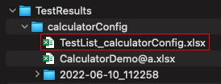
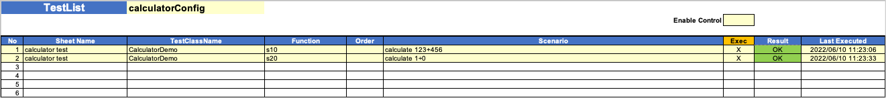
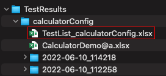
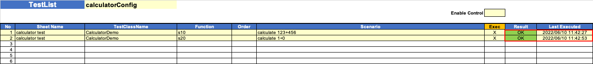
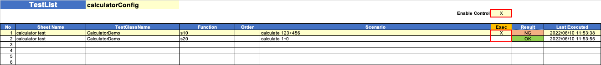
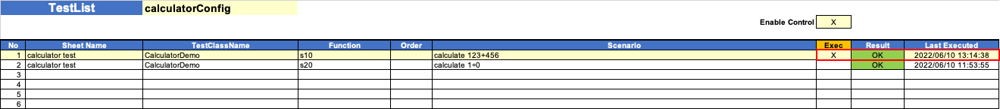

TestList
TestList is generated after test finished. If already exists, TestList is updated by succeeding tests.
Features
- You can see overview of tests results as list.
- You can filter tests for execution. It’s useful for rerun tests in error.
Example 1: Generate TestList
You can generate TestList.
- Run
CalculatorDemo(src/test/kotlin/demo/CalculatorDemo.kt). - Open TestList file.
 - You can see TestList like this.

Example 2: Rerun tests and update TestList
If you rerun tests, TestList is updated.
- Run CalculatorDemo again.
- Reopen TestList file.
 - You can see TestList like this. Look
LastExecutedis updated.

Example 3: Rerun only failed test
Some tests may succeed, and others may fail. Let’s see TestList in this case.
- Run CalculatorDemo. Tap any digit button while s10 is running to make it failed.
- Reopen TestList file.
- You can see TestList like this. Look
ResultandLastExecutedis updated.
Now you may want to rerun only failed test.
- Set
Enable Controlto “X”. - Set
Execto “X” on the line you want to rerun. - Save the file.

- Set
- Run CalculatorDemo again. Tests that you specified “X” on column exec is executed.
- Reopen TestList file. You can see TestList like this. Look
ResultandLastExecutedis updated.
